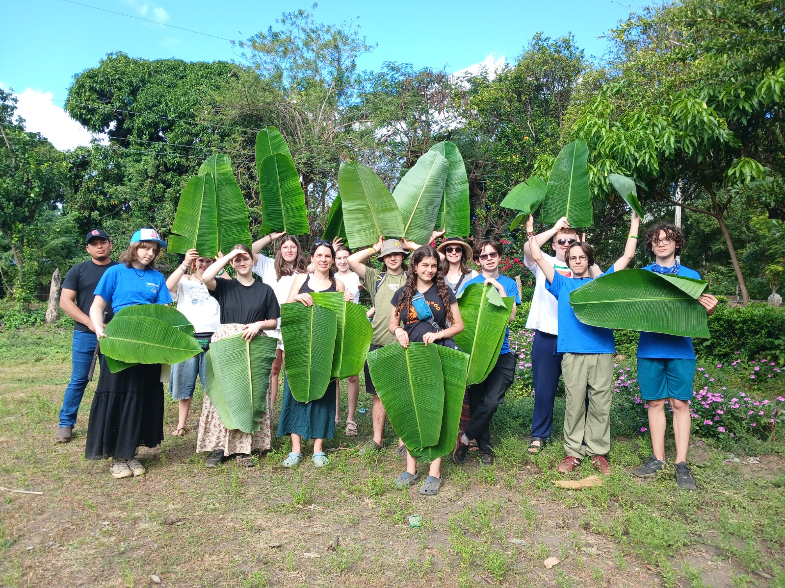
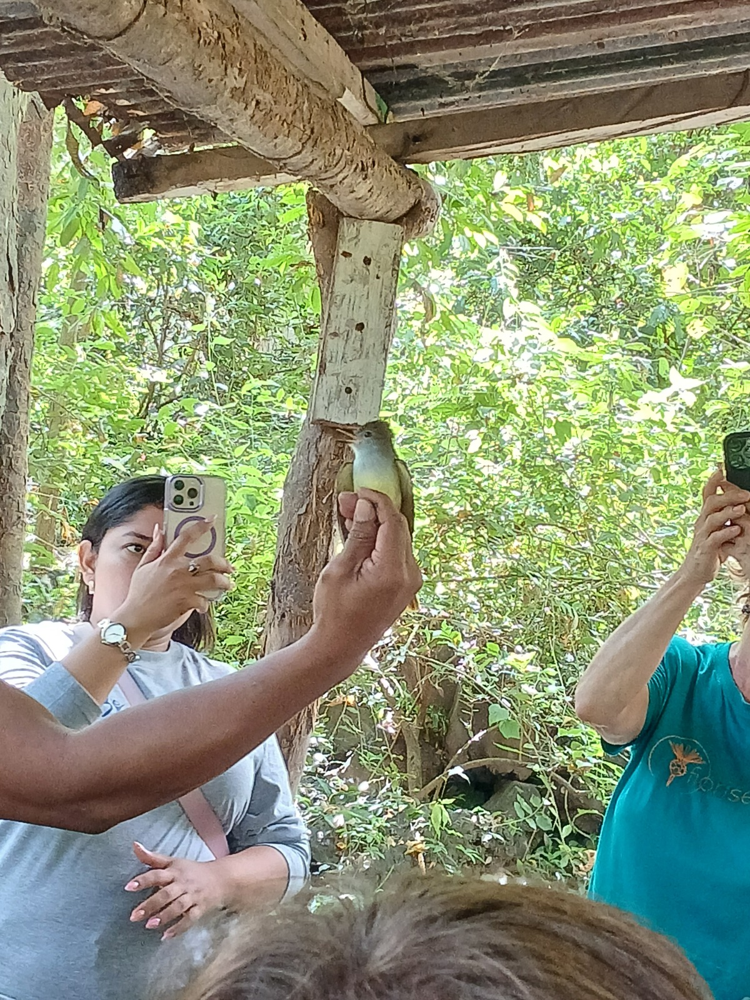
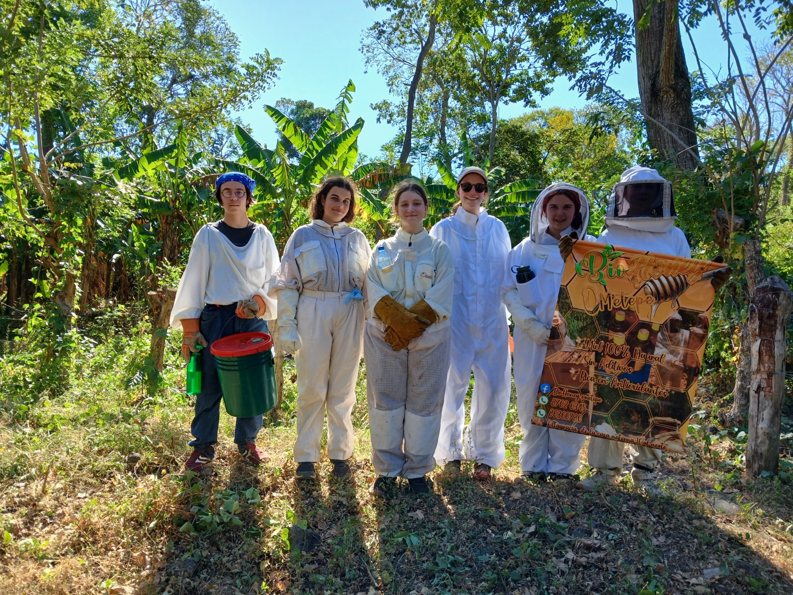
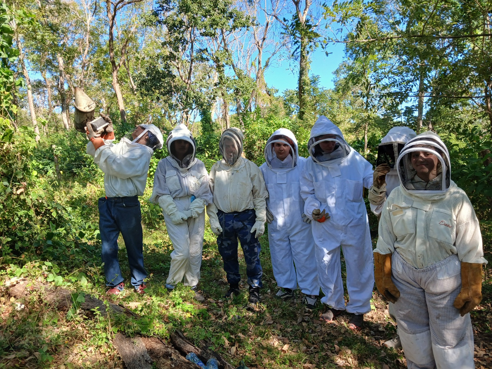
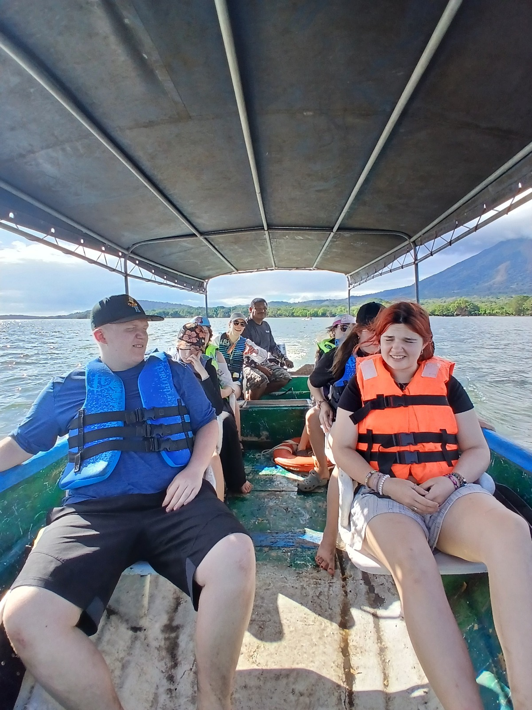
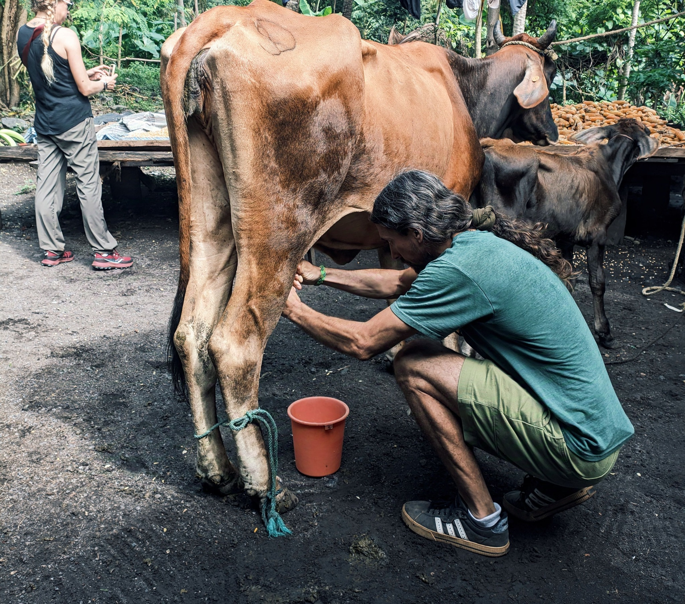
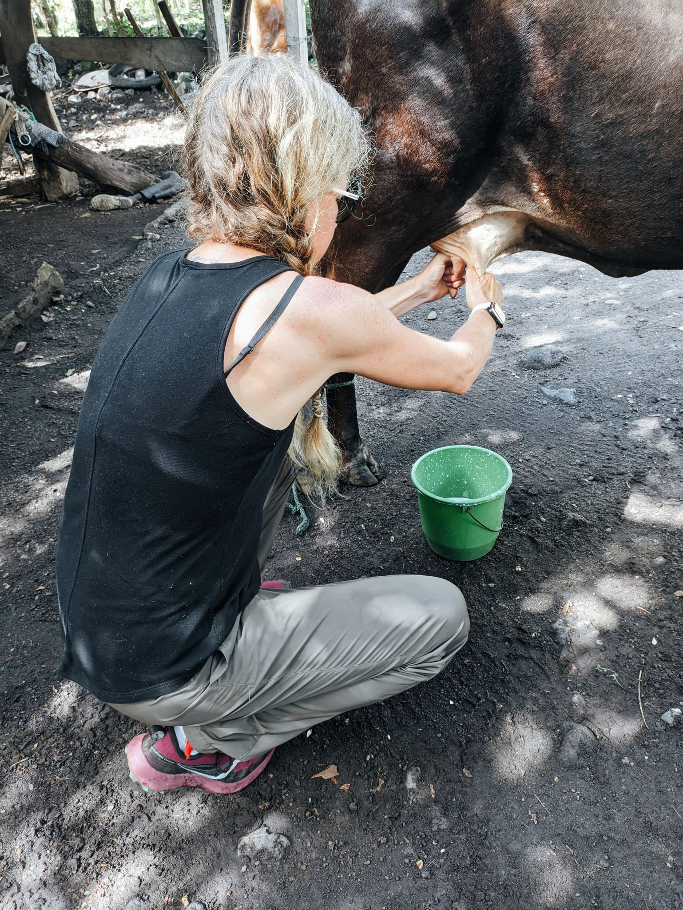
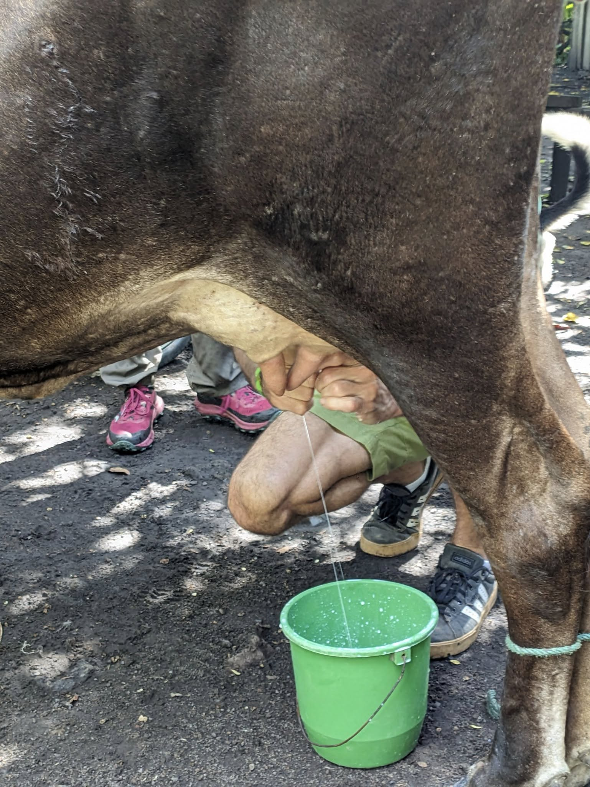

An Ancient Community Between Two Volcanoes
Nestled on Ometepe Island, 16 kilometers south of the port town of Moyogalpa, Los Ramos is an indigenous community committed to preserving their rich cultural heritage. Our home sits on an ancient cemetery dating back to Pre-Columbian times, between the two monumental volcanoes that form this extraordinary island in Lake Nicaragua.
We offer a unique eco-tourism experience that connects visitors to our community, the island's culture, and the natural resources of Nicaragua. Upon arrival, you will be greeted with open arms and open homes — getting a glimpse of daily life through the eyes of local Nicaraguans. Our community members strive to create experiences that will last a lifetime.


Cultural Cooking Class
Step into a traditional Nicaraguan kitchen and learn to prepare nacatamalies — the beloved dish at the heart of every celebration. Guided by local women who have perfected these recipes over generations, you'll work hands-on with fresh ingredients wrapped in banana leaves, learning the stories and traditions behind every step. At the end, you sit down and feast on what you've created together.

Cultural Programs
Eight immersive experiences designed by the community to share their heritage, their land, and their way of life with visitors from around the world.
Bird Banding Experience
Spend a full day with local bird researchers — learning to identify species, observing birds up close, and participating in hands-on bird banding in the forests of Ometepe.
Learn More
Ometepe Island is home to an extraordinary diversity of bird species, and this experience puts you right in the middle of it. You'll join local researchers at their forest banding station, learning how they carefully capture, measure, band, and release birds as part of ongoing conservation efforts. Throughout the day you'll observe dozens of species in their natural habitat, learn to identify them by sight and sound, and gain a deeper understanding of the island's ecosystems. A home-cooked meal is included, shared with the researchers and your fellow visitors.

Cultural Cooking Class
Prepare traditional Nicaraguan nacatamalies with local women — three hours of hands-on cooking, storytelling, and a shared meal.
Learn More
The cooking class is the community's most beloved program. You'll work alongside local women who have been perfecting these recipes for generations, learning the traditional processes of preparing masa, seasoning meats, and wrapping everything in fresh banana leaves. The class is as much about conversation and connection as it is about cooking. You eat what you make — and it's delicious.

 $10
$10
Los Ramos Theater
Community members of all ages perform stories of island history, culture, and Nicaraguan identity in a captivating hour-long show.
Learn More
Theater programs are the pride and joy of the people of Los Ramos. Community members — from children to elders — put their heart and soul into every performance, sharing stories of the island's history, indigenous culture, and the spirit of Nicaragua. The performers hope that after the show, you'll fall in love with their beautiful little paradise just as they have.



$25Beekeeping Class
Suit up and spend a full day with local beekeepers — learning the art of beekeeping, understanding bee conservation, and tasting fresh honey straight from the hive.
Learn More
This hands-on experience takes you into the world of beekeeping on Ometepe Island. You'll suit up in full protective gear alongside local beekeepers who have been tending hives for years. They'll teach you how they care for their colonies, explain the vital role bees play in the island's ecosystem, and show you how honey is harvested. You'll get up close with the hives, learn about the different bee species on the island, and taste fresh honey at the source. A home-cooked meal is included, and you'll leave with a new appreciation for these remarkable creatures and the people who protect them.


 $20
$20
Mirador Horseback Tour
Ride horseback to two stunning overlooks above Lake Nicaragua — the largest freshwater lake in Central America — with parrots, howler monkeys, and local legends.
Learn More
This three-hour horseback adventure takes you to two different miradors (lookout points) overlooking Lake Nicaragua, the largest freshwater lake in Central America. From the high vantage points you'll take in sweeping views of the island's lush canopy and the shimmering lake beyond. Along the way, your local guide shares myths, legends, and stories of the island while you watch for parrots, howler monkeys, and white-faced capuchin monkeys in the trees.


By Land and By Sea
Explore Ometepe by water — ride a motorized panga and paddle a kayak down the Istian River, taking in the island's wildlife and volcanic landscapes.
Learn More
This tour combines the best of land and water. You'll board a panga — a traditional motorized boat — and cruise along the shores of Lake Nicaragua before heading into the Istian River. Then you'll switch to kayaks and paddle through the calm waters surrounded by lush vegetation and abundant birdlife, with Ometepe's volcano towering in the distance. The experience is both adventurous and unforgettable.

 $20
$20
Nourishing Nicaragua
A hiking tour through two family farms where you'll harvest fresh food, learn traditional fishing methods, and share a meal made from what the land provides.
Learn More
Visit two working farms in the community. At the first, a local family walks you around their land explaining how they grow their crops and the methods they use. They then serve you a meal from the freshly harvested foods. At the second farm, you'll embark on a traditional fishing trip, learning the fishing methods passed down through generations. This experience creates personal connections and offers a window into day-to-day life on Ometepe Island.



$10Milking Tour
Visit a family farm and learn the traditional art of hand-milking a cow — a hands-on experience that connects you to the daily rhythms of rural life on Ometepe.
Learn More
This tour takes you to a working family farm in the community where cattle have been raised for generations. A local farmer teaches you the traditional technique of hand-milking, guiding you step by step as you try it yourself. You'll learn about the role cattle play in island life, meet the animals up close, and experience a side of Ometepe that most visitors never see. It's an authentic, unforgettable connection to the land and the people who live off it.




Mi Casa Es Tu Casa
Los Ramos gives you the opportunity to know a side of Nicaragua that very few experience. Families within the community open their homes and welcome you into their family during your stay. You'll experience daily life alongside local people and gain a deeper connection to the culture of Ometepe Island.
Getting to Nicaragua
Fly into Managua (MGA). From there, take a bus or shuttle to the lakeside town of San Jorge in Rivas — about 2.5 hours south.
Ferry to Ometepe
Catch the ferry from San Jorge to Moyogalpa on Ometepe Island. View the ferry schedule →
Arriving at Los Ramos
From Moyogalpa port, Los Ramos is 16 km south. We can help arrange local transport — just email us when you book.
Book Your Experience
Email us to reserve your programs and homestay. No deposit required — pay in cash when you arrive. We'll confirm your dates and get everything ready for you.
✉ losramoscommunity@gmail.comI'm interested in visiting your community. Here are my details:
Program(s): [e.g., Cooking Class, Mirador Tour]
Number of people: ___
Preferred dates: ___
Homestay needed: Yes / No
Thank you!
For group bookings (10+ people), contact our partner OutMore Adventures.